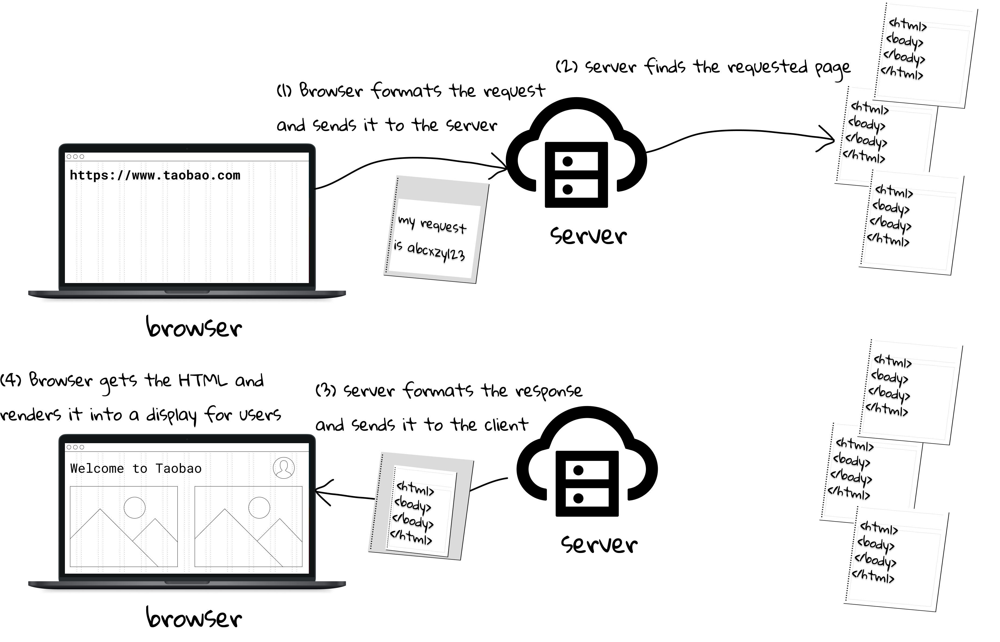
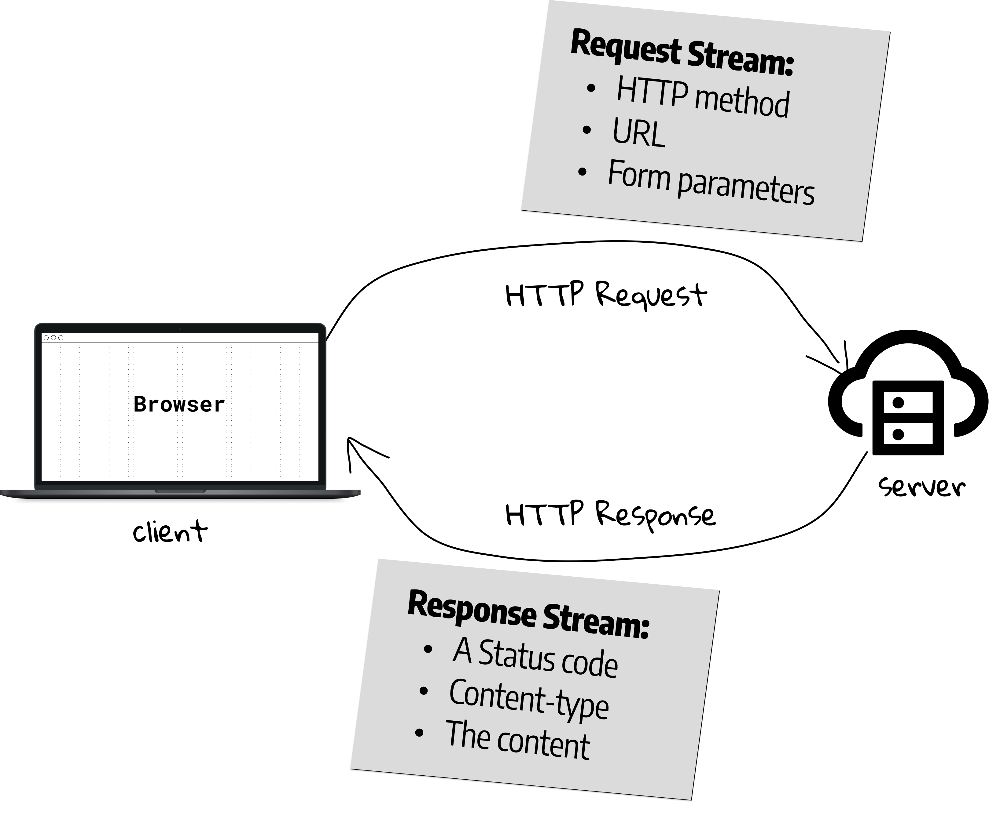
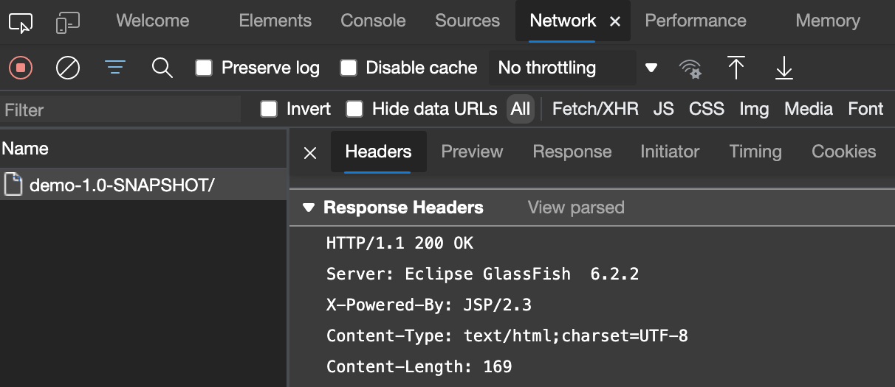

1.4 A Brief Introduction To HTTP
The server of taobao.com may be located in Hangzhou, so how does it deliver the web pages to your web browser by travelling thousands of miles? Figure 1.12 illustrates the whole process when you input an address or click a link in the web browser.
[!NOTE] To see what are delivered, you can select
Show Page SourceorView Page Sourceto inspect the HTML source code of any website just like what we did in Section 1.3.

In a nutshell, it can be described as a request-response model between the client[1] and server[2].
- The client sends a request containing the name and address of the thing (e.g., web pages) the client is looking for.
- The server usually has lots of "content", so it has to locate the desired one according to the request.
- The server's response contains the actual document that the client requested.
- The client receives the response for processing (e.g., rendering)[3].
HTTP: overview
In the previous section, we know that HTML tells the browser how to display the content to the user. Clearly, we also need a set of "rules" for the communication between the client and server, and such rule is called HTTP.
Hypertext Transfer Protocol (HTTP) is an application-layer protocol for transmitting hypermedia documents, such as HTML.
HTTP is an application layer protocol that is sent over TCP (http), or over a TLS-encrypted TCP connection (https), though any reliable transport protocol could theoretically be used[4]. If you are not familiar with this networking protocol, here is the crash course: TCP is responsible for making sure that a file sent from one network node to another ends up as a complete file at the destination, even if the file is split into chunks when it is sent.
[!NOTE] Computer Networking is one of the core courses of Computer Science, but only a handful of knowledge is used in this book. You can refer to [5] (for general networking) and [6] (for HTTP) to gain an in-depth understanding.
The structure of an HTTP conversation is a simple Request/Response sequence; a client requests, and a server responds. Figure 1.13 shows the key components of request and response.

[!TIP] We will revisit request and response in Section 3.2.
Response
When it comes to response, it includes a status code indicating whether the request has been successfully completed. For example, 200 means OK, and 404 means Not Found. A complete list can be found in HTTP response status codes.
The response also include a content-type field, a.k.a. a MIME type. The MIME type tells the browser what kind of data the client is about to receive so that the client will know to process it[7]. The simplest MIME type consists of a type (the general category into which the data type falls, such as video or text) and a subtype (he exact kind of data of the specified type the MIME type represents); these are each strings which, when concatenated with a slash (/) between them, comprise a MIME type.
type/subtype
For example, text/html is the MIME type for HTML files, and image/png is the MIME type for PNG files. A list of common MIME types can be found at Common MIME types.
The third key element is the data itself (e.g., the HTML document).
Notice that the three key elements mentioned above are only parts of an HTTP response. An HTTP response has both a header and a body. The header info tells the browser about the protocol being used, whether the request was successful, and what kind of content is included in the body. The body is identical to the third key element. The following shows the response header of our HelloWorld web application, and we can find that HTTP is human-readable, providing easier testing for developers, and reduced complexity for newcomers.
HTTP/1.1 200 OK
Server: Eclipse GlassFish 6.2.2
X-Powered-By: JSP/2.3
Content-Type: text/html;charset=UTF-8
Content-Length: 169
[!TIP] You can view both the header and body in the web browser. Right-click to display the pop-up menu, and then select
Inspect Element(in Safari) orInspect(in Edge, Firefox and Chrome), and at last clickNetworktab.

Request
The first thing you need to know about HTTP request is the request method, indicating the desired action to be performed for a given resource. The HTTP protocol defines several methods, but the ones most often are GET and POST. And you can find a complete list at HTTP request methods.
- The
GETmethod requests a representation of the specified resource. Requests using GET should only retrieve data. - The
POSTmethod submits an entity to the specified resource, often causing a change in state or side effects on the server.
Notice that the core difference between GET and POST is the semantic: GET is used for retrieve data, and POST often changes the state of server. Let's look at some examples: When you input an address and then press Enter in the browser, it is a GET request; When you input the username and password and then click Login in, it is a POST request.
The seconds key element is the URL, short for Uniform Resource Locator. URL is a text string that specifies where a resource (such as a web page, image, or video) can be found on the Internet. In the context of HTTP, URLs are called "Web address" or "link". Your browser displays URLs in its address bar, for example: https://www.bing.com. Some browsers display only the part of a URL after the "//", that is, the domain name. Remember what it is in the address bar of the HelloWorld application? It is http://localhost:8080/demo-1.0-SNAPSHOT/. Here, localhost is a special host name of the computer where the web app is running, and you can also access it by the IP address 127.0.0.1[8]. demo-1.0-SNAPSHOT is our application name, and in the URL, it is a resource path.
What is 8080 here? It is a port, designated by a number[9]. For a computer connected to a network with an IP address, a port is a communication endpoint, and below 1024 each port is associated by default with a specific protocol. For example, the default port for the HTTP protocol is 80 and the default port for the HTTPS protocol is 443.
Like the response, there is also a request header. Figure 1.15 shows the content of a request, and you can also view it in Network tab. Notice that the headers in HTTP/2 is slightly different.
Let's have a practical experimental. Try to input "Java Web" in Bing, and what can you see in the address bar after pressing Enter? It should be a long string starting with "https://www.bing.com/search?q=Java+Web&", and surely it is a GET request. Now we are in a position to discuss the next major difference between GET and POST when sending data (parameters) to the server, and this is also the third key element of a request.
For GET, all the parameters sent to server (if there are any) are appended to the URL starting with a "?", and parameters are separated with am ampersand "&". So, it has several limitations:
GETcan only send textural parameters. If you need to upload a multimedia file (e.g., an image), you have to usePOST.GETshows what you sent in the address bar. In some cases, you might keep them private (e.g., the password), and again you have to usePOST.- The length of contents in the address bar is limited[10]. If you want to send a very large parameter, even if it is textural, you still have to use
POST.
It seems that POST is an advanced GET. It is true. At the time the HTTP was invented, GET was the only method, and other methods were added later due to the increasingly complicated Internet requirements. So, should we always use POST? The answer is NO. Recall the core difference between them: the semantic. If your intention is simply to retrieve resource, then GET is the right choice.
We still have one question to be answered. The parameters of POST is NOT found in the URL, then where is it? Unlike GET, there is another part called "message body", also known as payload in a POST request, and parameters can down here in the body.
Back to our web application
Create an HTML file named test.html inside webapp folder, and write anything you learned in the last section. Then copy an PNG image, say test.png, into webapp folder. If all goes well, you should access those two resources in the web browser via URL http://localhost:8080/demo-1.0-SNAPSHOT/test.html and http://localhost:8080/demo-1.0-SNAPSHOT/test.png, respectively. Some students may have the following questions:
- Why would http://localhost:8080/demo-1.0-SNAPSHOT go to
index.jsp?
By default, the web application would look for resources named index, such as index.html and index.jsp.
- What is difference between
HTMLandJSP?
The answer, by a large extent, serves the purpose why this course exists. Those resources, like an HTML document and an image, are static, while their counterpart are dynamic. Static resources are pre-created documents, and they are the same every time people get them; dynamic are generated by computing on demand. In our example, the web browser, in fact, cannot render a JSP directly, and it is the Tomcat who translates the JSP to HTML code, and wraps it into the response.
Here are more examples with respect to the dynamic. When you search a book at amazon.com, the specific web page is generated by retrieving the data from database, rather than pre-created. In addition, some contents (e.g., book recommendation) are computed according to the user's profile dynamically. And we could claim that, every enterprise website relies on the dynamic web technologies.
[1] The term client is a counterpart of server, referring to the software that knows how to communicate with the server. When we use the term client, we usually won't care whether we're talking about the human user or the specific application (e.g., a web browser, an Android app).
[2] When we say "server", we mean either the physical machine (hardware) or the web server application (software). For example, the machine equipped with GlassFish is a server.
[3] For files like HTMLs, images, pdfs, and even videos, the web browser is able to render for a display, while other files (e.g., zip, exe) often would trigger a download.
[4] While the HTTP/1.1 and HTTP/2 are mainstream now, HTTP/3 protocol, upcoming major version of the HTTP, uses QUIC rather than TCP.
[5] Computer Networking: A Top-Down Approach, by James Kurose, Keith Ross.
[6] HTTP: The Definitive Guide, by Brian Totty, David Gourley.
[7] Besides the MIME type, Content-Type also has a charset, indicating the character encoding standard (i.e., UTF-8).
[8] Every machine that can be accessed is assigned an IP address in the digital form (e.g., 13.107.21.200). But it is hard for people to remember, so domain names (e.g., bing.com) emerge. The Domain Name System (DNS) is able to translate a domain to the IP address.
[9] The designated port 8080 is set by IntelliJ IDEA, and you can use a new one above 1024 as long as it is available.
[10] GET is limited by the URL length (about 2KB), and the maximum POST request body size is configured on the HTTP server and typically ranges from 1MB to 2GB.